|
UNA EXPERIENCIA DE
HIBERNACIÓN EN NEVERA
María José Navarro, 2006
INDICE
1. INTRODUCCIÓN.
1.1 Decisiones.
1.2 Ventajas e inconvenientes de la
hibernación en nevera.
2. MATERIALES E INSTRUMENTOS
2.1 La nevera
2.2 Termostato.
2.3 Termómetro con sonda de cable
2.4 Termohigrómetro
2.5 Recipiente para la tortuga
2.6 Acumulador de frío
2.7 Tubos de plástico.
2.8 Bomba de aireación.
2.9 Programador para la bomba de aireación.
2.10 Substrato.
3. PROCEDIMIENTO
3.1 Desinfección y/o esterilización
3.2 Procedimiento de calibrado y conexión del
termostato.
3.3 Aireación de la nevera.
3.4 Preparativos del animal.
3.5 Introducción de la tortuga en la nevera.
3.6 Controles semanales durante el proceso.
3.7 Salida de la hibernación.
4. CONCLUSIONES.
5. BIBLIOGRAFÍA.
Agradecimientos
1. INTRODUCCIÓN.
La hibernación es un proceso natural en numerosas especies de tortugas
que viven en regiones de clima templado, donde durante el invierno, el
calor del sol no proporciona las condiciones que los animales
necesitan para mantenerse activos. Estas especies han perfeccionado
durante milenios una adaptación de sus organismos para entrar en un
letargo que les permite ralentizar su metabolismo y sobrevivir hasta
que el calor del sol en la primavera los activa de nuevo.
En muchas especies de tortugas, como por ejemplo, en las
mediterráneas, la hibernación es necesaria para el éxito de la
reproducción. Además es una de las variables que, en la cría en
cautividad, ayudan a un crecimiento más naturalmente regulado y
contribuyen a evitar la piramidización debida a la sobrealimentación,
que es una de las causas, entre otras muchas (falta de humedad, dieta
inapropiada por ratio muy baja de Ca/P o con demasiado contenido en
proteínas, falta de calcio, déficit de radiación UVB, etc) que produce
esta patología.
1.1. Decisiones.
Fer es un pequeño machito de testudo hermanni hermanni de 14 meses. El
año pasado no hibernó, así que este año va a ser su primera
experiencia de hibernación ¡y también la mía!.
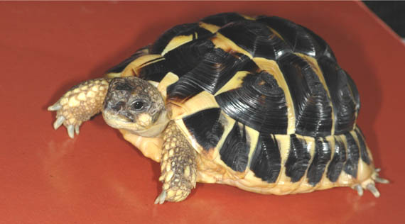
Fer (María-José Navarro).
Aunque Fer vive en un terrario con una lámpara PowerSun©
en una habitación
calefactada y su temperatura nunca baja de 20ºC, su instinto presiente
el invierno y pasa más tiempo dentro de su cueva-refugio.
Este año ha comido mucho una dieta de calidad, con alto contenido de
plantas silvestres, fibra y calcio. Ha tomado el sol, correteado por
el césped. Está desparasitado y con una salud perfecta. Por lo que hay
ciertas garantías de que podrá afrontar con éxito su primer sueño
invernal.
Me he decidido por una hibernación cortita de 6 semanas en nevera.
Este procedimiento ha sido usado con éxito por numerosos criadores
ingleses y alemanes, donde el clima tampoco permite una hibernación
natural. Como señala Highfield (2002) “En regiones donde el control de
la temperatura es problemático, debería considerarse realizar la
hibernación en una habitación refrigerada. Los refrigeradores
domésticos grandes (no congeladores) también pueden modificarse para
este fin” (p. 54). Ha sido descrito con detalle por Highfield en dos
videos del Tortoise Trust. Y también ha sido de mucha utilidad la
experiencia de nuestro compañero Josep Vicenç que la puso en marcha
con pleno éxito el pasado año con sus mediterráneas.
Las razones para elegir el método de la nevera vienen motivadas por
las condiciones ambientales. Vivo en un piso en una ciudad con
inviernos muy fríos, en los que son normales temperaturas nocturnas de
–8º/–10ºC mantenidas durante semanas, por lo que se descarta la
hibernación en el exterior. Y en mi vivienda, la calefacción central
está regulada para mantener los 23-24ºC diurnos y 20ºC nocturnos. Con
lo que no es posible obtener los parámetros que permitan la
hibernación de las tortugas. La solución es proporcionar
artificialmente unas condiciones más o menos estables en torno a los 5ºC
y eso, en mi caso, sólo es posible en una nevera.
1.2 Ventajas e inconvenientes de la hibernación en nevera.
La hibernación en la naturaleza no es un proceso constante y fijo en
cuanto a temperatura. Unos días hace más frío y otros, menos. De
manera que los animales se entierran de manera refleja a más o menos
profundidad, salen y entran de sus refugios, incluso comen y siguen
escondidos.
Los inconvenientes que tiene la hibernación en nevera son: 1) La
artificialidad del proceso, dado que hay que inducir la hibernación,
controlando y manipulando la luz y la temperatura. 2) El cuidado
minucioso que hay que tener con la desinfección de la nevera y el
sustrato porque, como sabemos, dentro de ella se dan las condiciones
adecuadas para la proliferación de hongos. 3) El control de todos los
parámetros de temperatura, humedad y ventilación.
Las ventajas son: 1) Proporcionar unas condiciones controladas de
hibernación en cuanto a temperatura, humedad y duración de la misma.
2) La seguridad de estar a salvo de posibles depredadores. 3) La
facilidad para seguir el proceso y para revisar al animal durante su
sueño.
2. MATERIALES E INSTRUMENTOS
2.1 La nevera
He usado una neverita pequeña, de las que se usan en los minibares de
los hoteles. Marca LG© (Modelo LG GC-051 SNS) y que cuesta alrededor de
200 euros.
Vistas de la nevera (María-José Navarro).
La
nevera tiene dos espacios disponibles: el suelo y una bandeja en el
centro. El suelo tiene muy poco fondo porque entre el compresor y el
contenedor de botellas de la puerta, deja sólo 13 cm de fondo libres y
38 de longitud. La bandeja del centro tiene todo el fondo (29 cm),
pero el inconveniente es que está cerca del mini congelador y que la
altura de la bandeja al congelador es sólo de 13 cm. Esa bandeja se
puede quitar, pero hasta esa altura, el fondo sigue siendo poco
profundo. Desde el suelo al congelador hay 30 cm si quitamos la
bandeja.
En estas dimensiones no hay mucho donde elegir. La verdad es que la
nevera me ha decepcionado un poco, porque entre el compresor y el
botellero deja poco espacio disponible. El año próximo intentaré hacer
algunos ajustes, como desmontar el soporte del botellero para tener
algo más de espacio al cerrar la puerta.
Quizá sean más adecuadas las neveritas sin congelador de las que
proporcionan a los bares algunas marcas comerciales de refrescos y que
tienen la puerta transparente y sin botellero. Aunque, por otra parte,
estas últimas también tendrían inconvenientes, ya que consumirían más
electricidad porque el vidrio no es muy buen aislante.
A una nevera de este tamaño, se le podría dar doble utilidad,
hibernación de babies en invierno, e incubadora de huevos en el
verano.
2.2
Termostato.
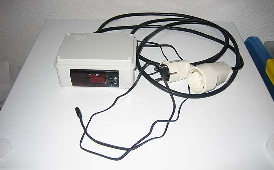
Termostato externo AKO©, Modelo 14123 (María-José Navarro).
Se
necesita un termostato para aire acondicionado o similar, que permita
función inversa, conectando la nevera cuando la temperatura sube de
cierto valor. Es decir, que tenga la opción de trabajar con circuito
de frío, a la inversa de lo normal. He elegido un termostato tipo on/off,
o sea, encendido y apagado, en lugar de uno de los de tipo
proporcional, que lo que hacen es administrar la potencia del elemento
calefactor/regrigerante.
Necesitamos un termostato/termómetro digital de precisión de un grado
y con sonda de cable. Para hibernación no hacen falta decimales ni
tanta precisión como para incubación. Si no se encuentra uno con sonda
separada, sino sólo del tipo pared, se podría meter entero dentro de
la nevera, sacando el cable eléctrico que active y desactive la
nevera. Pero si es con sonda mejor, así se puede ajustar desde fuera.
El que he usado es de la marca AKO©, Modelo 14123.
El termostato se puede dejar encima de la nevera o fijarlo en la pared
para tenerlo seguro y que no se caiga accidentalmente. Sólo hay que
poner el termostato interno de la nevera al máximo, para que no se
apague nunca, y ajustar en el termostato externo la temperatura de
conexión-desconexión que se quiera. Ya se encargará este último de
tener el control de la nevera y de enchufarla o no. Obviamente hay que
hacer pruebas unos días antes.
2.3 Termómetro con sonda de cable
He usado otro termómetro con sonda de cable, para enterrarla en el
sustrato al lado del animal. Marca TFA©, modelo 30.1012.
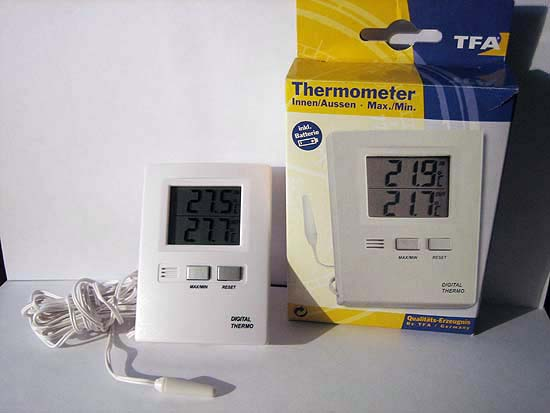
Termómetro
con sonda de cable TFA, modelo 30.1012 (María-José Navarro).
2.4 Termohigrómetro
Además he introducido un pequeño termohigrómetro encima del sustrato
para controlar, sobre todo, la humedad de la zona próxima al animal.
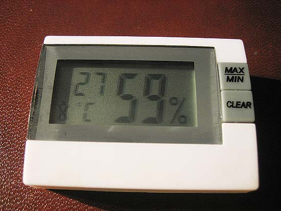
Pequeño termohigrómetro digital sin sonda (María-José Navarro).
2.5 Recipiente para la tortuga
Para este procedimiento no hace falta una caja mucho más grande que la
tortuga, ni doble caja con aislamiento, porque se supone que en la
nevera la temperatura ya será correcta. Siguiendo los pasos de Josep
Vicenç, escogí la caja del tamaño adecuado para meter, debajo de la
tortuga, un "acumulador de frío".
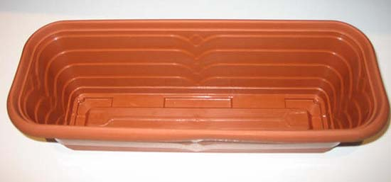
Recipiente (María-José Navarro).
He
elegido un recipiente alargado, donde cabía la tortuga, y que se
adaptaba perfectamente al espacio disponible en la parte baja. Una
jardinera de plástico que encajaba en las ranuras de la bandeja de la
nevera, permitiendo que la propia bandeja hiciera de improvisada tapa.
Dentro he puesto un acumulador de frío. El resto de la nevera la dejé
vacía.
2.6 Acumulador de frío
Acumulador de frío (María-José Navarro).
Son
recipientes herméticos de plástico llenos de un gel de elevado calor
específico que varia muy lentamente de temperatura. Se emplean para
acampadas y para el transporte de medicamentos que requieren
refrigeración. La idea es que así la tortuga no note los pequeños
cambios de temperatura que se dan en la nevera, a causa de la
diferencia entre los niveles de encendido y apagado del termostato.
2.7 Tubos de plástico.
|
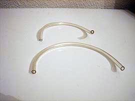
Tubos de
aireación (María-José Navarro). |
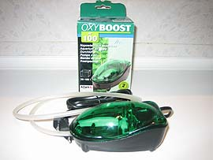
Bomba de
aireación (María-José Navarro). |
Para
romper el hermetismo de la nevera, coloqué dos tubitos de plástico de
pequeño calibre, mitad dentro mitad fuera, para que pueda circular
algo de aire, aunque se ventile la nevera cada día medio minuto por la
mañana y por la noche.
2.8 Bomba de aireación.
He utilizado el OXYBOOST© AP100 de la casa Aquael. Es un pequeño
compresor, del tamaño y forma de un ratón de ordenador, que inyecta
aire, mediante un tubito fino. Es de los usadas para de aireación de
acuarios. Es un invento barato (11 €), que proporciona una cierta
tranquilidad, al saber que no va a faltar aire en el interior de la
nevera.
2.9 Programador para la bomba de aireación.
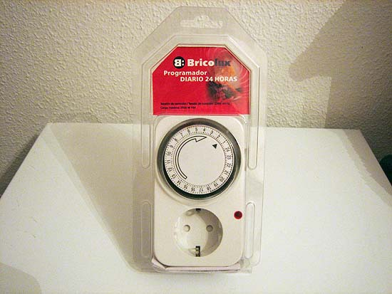
Programador (María-José Navarro).
He
utilizado un temporizador mecánico simple, de los que se venden en
ferreterías, que consta de una rueda horaria, rodeada de pequeñas
pestañas, que puedes levantar individualmente para activar la salida.
Pongo una pestaña levantada, que corresponde a 15 minutos de
funcionamiento, cada 6 horas. Es decir, se conecta cuatro veces al
día. Tiene la ventaja de que proporciona una cierta tranquilidad el
día que no se puede estar en casa para abrir y ventilar la nevera.
2.10 Substrato.
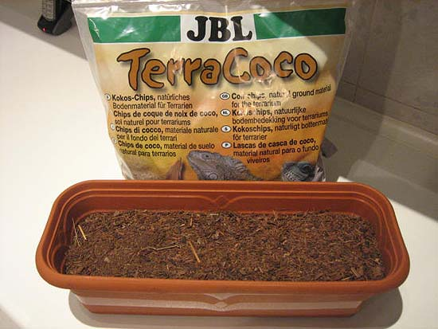
Substrato (María-José Navarro).
Highfield recomienda poner tierra o turba como substrato en la caja de
hibernación. El motivo es que sin el substrato, aún a 5ºC, las
tortugas se mueven mucho, pues tienen la tendencia refleja a
enterrarse. Poniendo un poco de substrato para que se puedan
semienterrar, parece que dejan de moverse. El substrato conviene
esterilizarlo antes.
He probado dos tipos de sustrato: corteza de coco triturada, del tipo
de la que tiene en su terrario, y papel de cocina en la base y tiras finas
de papel encima. Luego explicaré el porqué.
3. PROCEDIMIENTO
3.1 Desinfección y/o esterilización
Como ya hemos señalado, todos los utensilios que van a estar dentro de
la nevera, y la nevera misma, deberán estar lo más desinfectados o
estériles posible, dado que una nevera, por sus propias
características, es un medio idóneo para la proliferación de hongos,
que hay que evitar a toda costa.
La superficie interior de la nevera, el recipiente que iba a contener
a la tortuga y el acumulador de frío, los lavé con jabón quirúrgico (Betadine©
scrub).
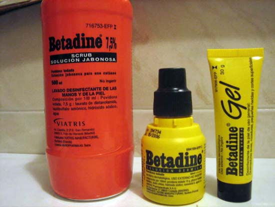
Tres productos desinfectantes de la casa Betadine©. El jabón (Betadine©
scrub, envase rojo) y el desinfectante para heridas líquido y en forma
de gel (amarillos) (María-José Navarro).
He
cocido en una olla con agua hirviendo durante 20 minutos la corteza de
coco que iba a usar como substrato, la he escurrido lo más posible en
un colador y la he dejado secar durante un tiempo en el horno a
temperatura suave. Aunque hay otras formas de esterilizarlo, la
cocción en agua hirviendo tiene la ventaja de que además disolverá
bastante bien los posibles abonos químicos, conservantes u otros
aditivos, que se hayan podido añadir al substrato (la solubilidad de
nitratos, fosfatos, etc, aumenta considerablemente al aumentar la
temperatura). Una vez seco el substrato, trituro la corteza en un
molinillo para facilitar que el animal pueda enterrarse mejor.
El resultado ha sido bueno, en el sentido de que no ha aparecido ni
rastro de moho de ningún tipo, tras seis semanas de hibernación.
3.2 Procedimiento de calibrado y conexión del termostato.
Como el proceso de preparación del animal durará casi un mes antes de
que esté dormido del todo y listo para el "frigo", hay tiempo de hacer
las mediciones de temperatura y humedad de la nevera.
Con la neverita limpia, desinfectada, recién descongelada y totalmente
vacía, comienzo por medir la temperatura usando el propio termostato
interno de la nevera. En la bandeja intermedia con el termostato al
mínimo (en 1 de 7) -que no consigue congelar los cubitos-, la temperatura son 5-6 grados y la humedad va de
71-74% (máximo y mínimo de 24 horas). Sigo tomando más mediciones de
la temperatura que hay en la parte más baja. Pero la temperatura
oscila, porque estos termostatos internos de las neveras no son muy
precisos. De manera que, para mantener la estabilidad que necesitamos,
la solución está en no confiar plenamente en el termostato de la
nevera y conectarla mediante un termostato externo, tal como sugiere Highfield (2002, pág. 54).
Con el fin de conocer el grado de precisión de nuestros instrumentos
de medición, procedemos a calibrar el termostato externo con sonda y
el termómetro con sonda. Para ello, medimos los cero grados. Se hace
congelando "cubitos" hechos con agua destilada y después dejándolos
fundir en un recipiente, hasta que tengamos bastante agua líquida,
pero quedando aún hielo por fundir. Eso serán los cero grados. Se
remueve bien y se mide lo que marca ahí el termostato y el termómetro,
introduciendo ambas sondas en esa agua durante 3-4 minutos.
En este proceso, hay que tomar las siguientes precauciones:
- Que el recipiente donde se realice (en nuestro caso, un vaso) sea
suficientemente profundo y que el volumen de agua con cubitos sea el
adecuado para que las sondas puedan sumergirse totalmente.
- Remover bien el agua con los cubitos para que se homogenice la
temperatura en todo el líquido
- Que las sondas no toquen con el cristal del vaso, ni entre sí.
- Que la temperatura de la habitación donde se realice la calibración,
no sea demasiado alta, o bien realizar la prueba introduciendo el
recipiente con las sondas en la nevera.
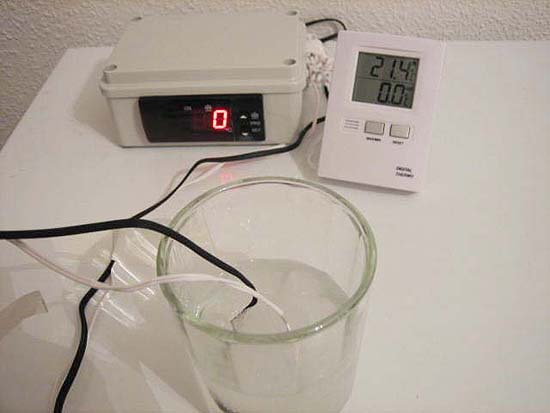
Calibrado a cero grados (María-José Navarro).
Durante la hibernación, hay que tener en cuenta esta medida obtenida
en la calibración, sobre todo, si marca algo por encima o por debajo
de cero, para saber la temperatura real a la que está el animal y
poder asegurarnos que no nos acercamos demasiado al punto de
congelación.
Si el termómetro y el termostato marcan lo mismo, ya es buena señal.
Por otra parte también es normal que no marquen exactamente cero, si
se han calibrado para temperatura ambiente alta. Además los márgenes
de tolerancia con el que se fabrican las sondas, son de alrededor de
un grado, de modo que puede haber diferencias de lectura de hasta un
grado entre dos sondas, en teoría idénticas. Simplemente es cuestión
de saber, con la calibración casera en hielo, si una determinada sonda
marca más o menos de lo correcto. A partir de ahí, se puede tener
siempre en cuenta esa diferencia para tener una buena idea de la
temperatura real, si nos movemos dentro de un rango de temperaturas
cercano al cero. En nuestro caso marcaron ambas los 0ºC.
Una vez comprobada la fiabilidad de termostato y termómetro, conecto
el termostato externo con sonda descrito y enchufo la nevera a la
corriente a través de ese termostato, poniendo el propio de la nevera
al máximo de frío, para que no se desconecte nunca la nevera, y sea el
termostato externo, mucho más preciso, como hemos visto, el que tenga
el control del encendido-apagado de la misma.
La sonda del termostato debe estar fuera del recipiente que contiene
al animal, midiendo la temperatura del aire de la nevera, pero a una
altura parecida a la caja de la tortuga, con el fin de que el
termostato reciba las fluctuaciones de temperatura lo antes posible
para encender o apagar el compresor. Dentro de la caja, la temperatura
cambia más lentamente que fuera, así que el termostato tardaría en
reaccionar y las fluctuaciones serían mayores.
Ponemos la sonda del termómetro en el interior de la caja de
hibernación al lado del animal.
Para más seguridad, ponemos otro termohigrómetro dentro de la caja de
hibernación cerca de la tortuga para comprobar que no haya demasiados
cambios bruscos y no nos salgamos de los parámetros de temperatura y
humedad.
Elegimos, por seguridad, que la temperatura de hibernación sean 5ºC en
el sustrato.
El termostato externo se ha puesto entre 4º/6ºC, para no forzar el
compresor con demasiados encendidos y apagados. Esto quiere decir que
el termostato conectará la nevera cuando la temperatura llegue a 6ºC y
la apagará cuando alcance los 4ºC. Pero dentro del substrato la
fluctuación es menor y más suave que en el resto de la nevera.
Lo más probable es que ese ajuste de programación del termostato
consiga la temperatura de 5ºC una vez colocado el sustrato. Y si no,
bastaría con colocar la sonda del termostato un poco más arriba (más
cerca del congelador), para que se apague antes o bien regularlo a
temperatura un poco más alta. Hay que hacer pruebas en cada caso para
comprobarlo.
Lo peligroso son los picos muy bajos de temperatura que se dan cuando
la nevera funciona a tope para compensar si la temperatura ha subido
mucho. Por ejemplo, la primera vez que se ponga la tortuga, o cuando
se ha abierto demasiado rato (para comprobar su estado, pesarla, etc).
En esos momentos, la nevera funcionará bastante rato a toda potencia,
el termostato se desconectará al llegar a los 4ºC, pero es posible que
la temperatura continúe bajando todavía un rato, pues el congelador
estará muy frío. Eso se puede evitar poniendo al principio un ajuste
algo más alto (7 u 8ºC), cuando sepamos que la nevera ha subido
demasiado de temperatura. Y una vez haya llegado al equilibrio, se
vuelve a ajustar a 4-6ºC de manera manual. Se podría reducir la
diferencia entre punto de conexión y de desconexión, por ejemplo 5-6ºC.
Un margen mayor, reduce las conexiones y desconexiones tan frecuentes
del compresor, con lo que protege la nevera a costa, eso sí, de unas
fluctuaciones de temperatura mayores. Se trataría de que transcurran
al menos un par de minutos de reposo entre el momento de desconexión
de la nevera y la siguiente conexión.
Conviene hacer mediciones de prueba durante varias semanas previas a
introducir al animal para comprobar que la temperatura del termómetro,
cuya sonda está enterrada en el sustrato, no baje de 4ºC para que no
se acerque demasiado al punto de congelación, ni suba de 7ºC para que
el animal no se despierte.
Es recomendable tener unos días para las comprobaciones de temperatura
con y sin bomba de aire y con dos o tres aperturas de nevera al día y
ver máximas y mínimas en los dos termómetros.
3.3 Aireación de la nevera.
Calculo que la neverita, tendrá una capacidad aproximada útil de unos
25 litros (aunque en el manual dice que son 48 litros), porque hay que
descontar lo que ocupa el compresor más unos 6 litros de la jardinera
con su sustrato. Por lo que quedarían unos 19 litros para la
circulación-almacenamiento del aire.
La pregunta que surge ahora es ¿cuántas veces al día se debería abrir
la puerta, como mínimo, para renovar el aire?. Ya sé que esto no es
una ciencia exacta, pero como abrir la puerta implica modificar la
temperatura interior, dada la temperatura que tiene esa habitación.
Pues he de buscar una solución de compromiso, entre que no le falte el
aire y no sobrecargar el sistema, para evitar al máximo los picos.
Aunque quizá no era necesario, he conectado una pequeña bomba de aire
al tubo de entrada, tal como recomienda Highfield en sus videos,
dejando los otros dos tubos como salida. La bomba no funciona de modo
continuo porque alteraría demasiado la temperatura, sino que la he
conectado a un temporizador, programado para que se ponga en marcha 15
minutos cada 6 horas. Es decir, 4 veces al día, para quedarme más
tranquila si un día falto de casa muchas horas.
Aunque la tortuga hibernando consume muy poco oxígeno, tanto si lo
hace bajo tierra, en un fondo fangoso bajo el agua (tortugas
acuáticas), o en nevera, es difícil saber cuanta
ventilación es necesaria, probablemente muy poca. Siempre será más
seguro excederse ventilando más de la cuenta. Abrimos tres veces al
día, a pesar de todo.
|
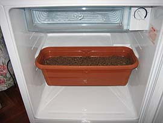
Jardinera en
nevera (María-José Navarro). |
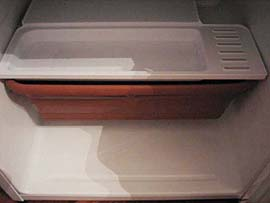
Tapa
(María-José Navarro). |
|
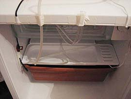
Instalada
(María-José Navarro). |
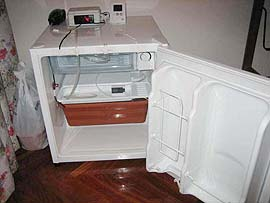
Todo conectado
(María-José Navarro). |
Cierto
que cuando se abre, cambia la temperatura, pero si se abre poco tiempo
no es problema. Todo el recinto de la nevera está frió y el compresor
se pondrá en marcha en seguida para enfriar el nuevo aire que ha
entrado. La tortuga, dentro de su recipiente con el acumulador de frió
y el substrato, no lo notará.
Y en definitiva, basta con probarlo, para ver si la temperatura varía
demasiado o no. Para eso tenemos una sonda dentro del
recipiente de la tortuga. Se puede ir viendo cómo evolucionan las
temperaturas máximas y mínimas. Si se notasen cambios importantes de
temperatura, no momentáneos, sino que durasen un cierto tiempo, cosa poco
probable, se podría reducir la entrada de aire, pero mientras no pase
eso, puedo estar tranquila.
3.4 Preparativos del animal.
Para la hibernación en nevera, deberá ponerse en marcha un
procedimiento similar al que seguiría el animal en su medio natural.
Pero la diferencia está en que en el medio natural, es la temperatura
y las horas de luz solar las que disparan automáticamente el mecanismo
instintivo de la hibernación por parte del animal, mientras que en
este procedimiento artificial de la nevera, somos nosotros quienes
debemos ir preparando al animal y ayudándole a ir poco a poco entrando
en letargo.
La siguiente tabla recoge el procedimiento seguido y las fechas en que
se llevaron a cabo las acciones.
|
FECHAS |
ACCIONES |
| 14 de octubre.
Repetido el 28 de octubre. |
Desparasitación con 16,5 mg de Panacur© y 16,5 mg.
de Flagyl© (La dosificación es 100mg/Kg). |
|
21 de Noviembre de 2005. |
El proceso comienza, alejando la lámpara PowerSun©, para
aumentar la distancia entre la lámpara y la tortuga, para que la
temperatura del terrario no suba de 20-23ºC, que es la de la
habitación, y disminuyendo las horas que la lámpara permanece
encendida. El animal se sigue poniendo en el punto donde esta la
PowerSun©, aunque ésta está demasiado alta para calentarle. Pasa
cada vez más tiempo enterrado o metido en su cueva, pero sale a
pasear. |
|
24 de noviembre. |
Su última comida. Fer pesa ahora 190 gr y mide 8,9
cm de plastrón. Tiene 14 meses de vida. Le doy largos baños tibios
diarios con el fin de hidratarle y ayudarle a evacuar. |
|
Del 25 al 30 de noviembre. |
Se va aletargando poco a poco, permanece mucho
tiempo escondido o enterrado pero sale a diario a ponerse debajo
de la PowerSun©, aunque no le calienta, y a caminar un ratito. Sigo
con baños tibios diarios. |
|
1 de diciembre. |
Le saco del terrario y le paso a una caja
prehibernación sin lámpara PowerSun© , con un sustrato de papel de cocina y
toda llena de tiras finas de papel para que el animal pueda
“enterrarse si lo desea” y tener controlada defecación y micción.
Sitúo la caja en una pequeña habitación que no tiene calefacción,
tiene una luz tenue y puedo ir bajando la temperatura (abriendo
más o menos una ventana) de 20º a 10º a razón de 1ºC al día de
descenso. Sigo con baños tibios, pero ahora cada 3 días para no
despertarle tanto, controlando que beba, secándole muy bien antes
de devolverle a su caja. |
|
10 de diciembre. |
Última evacuación. |
|
Del 11 al 18 de diciembre. |
Le mantengo entre 8-9ºC. Está totalmente dormido.
Baños de agua a la misma temperatura ambiente cada 3 días para no
despertarle demasiado. |
|
18 diciembre. |
Último baño e introduzco en la nevera a 5ºC
programada de 4-6ºC. Pesa 165 gr |
3.5
Introducción de la tortuga en la nevera.
18 de diciembre. 10h. ¡Primer intento de nevera fallido!
El animal estaba dormido. Le doy el último baño con el agua a
temperatura ambiente (25 minutos) para hidratarle antes de meterle en
la nevera. Se despierta, como es natural. Le devuelvo a su caja cerca
de la ventana abierta (a 8-9ºC). Espero dos horas. El animal tiene los
ojos cerrados. Le supongo dormido.
Le saco y le llevo a la nevera. Le entierro yo en el sustrato. Cierro
la nevera y al poco rato le oigo escarbar. Abro. Se había despertado y
luchaba por salir de allí. Había esparcido el sustrato por toda la
nevera. Esto se podría haber evitado usando una caja con tapa de
cierre hermético, perforada para permitir la aireación.
Le he devuelto a su caja y a la habitación de prehibernación, mientras
que desconecto y limpio toda la nevera y el suelo. Tengo que esperar
4-5 horas para volver a poner la nevera a la temperatura adecuada y
para que la tortuga se duerma nuevamente. La causa del fracaso
seguramente ha sido la temperatura de 23ºC de la habitación donde está
situada la nevera y el tiempo excesivo invertido en los preparativos.
Segundo intento: 18 de diciembre 17 horas.
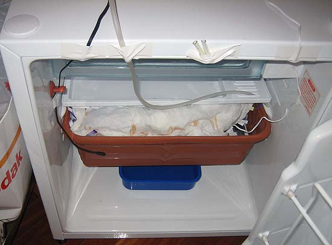
Segundo intento (María-José Navarro).
Como
no había tiempo de volver a cocer, secar y enfriar nuevo substrato y
el usado podría estar ya contaminado, introduje un cambio,
sustituyendo la corteza de coco por varias hojas de papel de cocina y
lleno el recipiente de tiras de papel, lo que facilita y hace más
limpio los controles del animal. Highfield menciona también, como
posibilidad de sustrato, las tiras de papel, aunque aconseja la
tierra, para ayudar a que el animal no se deshidrate. En nuestro caso,
se ha controlado muy rigurosamente la humedad del recipiente y una
posible pérdida de fluidos de la tortuga, para detectar y actuar ante
una posible evidencia de deshidratación.
¡Por fin! está dormido en la nevera a unos 5ºC. La primera noche está
entre 5,6 y 6,4ºC y 70% de humedad, lo que parecen ser buenos
parámetros, así que de momento no toco nada. Lo reviso todo más veces
estos primeros días (aún a riesgo de alterar algo su temperatura) para
quedarme más tranquila. Creo que está todo más o menos controlado
¡¡¡espero que mi Fer tenga unos felices sueños!!!.
3.6 Controles semanales durante el proceso.
La revisión y el pesaje del animal deben hacerse rápido con el fin de
no despertarle y no alterar demasiado la temperatura del interior de
la nevera. La tabla siguiente recoge los controles realizados. Durante
la tercera semana observamos una disminución de la humedad, que
afrontamos introduciendo un recipiente con agua en el suelo de la
nevera y vigilando y añadiendo agua al mismo en los siguientes
controles semanales, lo que aumentó de nuevo la humedad.
|
SEMANAS |
TEMPERATURA |
HUMEDAD |
PESO |
|
Primera |
Mín 4,7. Máx 7 |
65% |
164 gr |
|
Segunda |
Mín 5,2 Máx 6,8 |
65 % |
164 gr |
|
Tercera |
Mín 5,2 Máx 5,8 |
60% (pongo un recipiente con agua en el suelo de la
nevera para aumentar la humedad) |
164 gr |
|
Cuarta |
Mín 4,9 Máx 5,9 |
65% |
163 gr |
|
Quinta |
Mín 4,8 máx 6,2 |
68% |
163 gr |
|
Sexta |
Mín 4,9, máx 5,8 |
68% |
163 gr |
3.7 Salida de la hibernación.
Así como el proceso de preparación es lento y debemos permitir que el
animal vaya acondicionando su cuerpo, ralentizando su metabolismo y
durmiendo poco a poco, el proceso de salida de la hibernación debe ser
rápido, para conseguir que el animal se caliente, se active y comience
a beber y a comer lo antes posible., para que limpie pronto sus
riñones de las toxinas acumuladas durante la hibernación y recupere el
peso perdido.
Le saco el 28 de enero a las 6 semanas (menos un día, ¡porque tenía
tantas ganas de verle!) con un peso de 163 gr. Le dejo a temperatura
ambiente (23ºC) para que se vaya despertando y a los 10 minutos
empieza a moverse y a abrir los ojos.
|
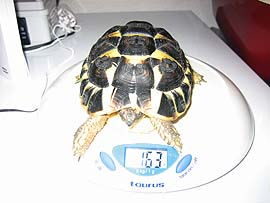
Peso al salir
(María-José Navarro). |
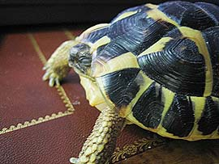
Aún con los
ojos cerrados (María-José Navarro). |
Le
doy un baño de agua tibia con dos gotas de Dayamineral© (un complejo
vitamínico para bebés) de 25 minutos para hidratarle. El animal bebe.
Después de bañarla pasa ya 166 gr.
La pongo en el terrario bajo la lámpara PowerSun© (30ºC) se calienta 10
minutos, pasea y olisquea su terrario. Se acerca a su comedero.
Le ofrezco canónigos, lechuga (para ayudar a la hidratación) y
escarola espolvoreada de fibra, calcio y vitaminas (una pizca de
Multicentrum©). Para mi sorpresa, se pone a comer normalmente a los 45
minutos de salir de la nevera, ¡una pasada, que me llena de emoción!.
Al final del día, pesaba ya 170 gr y su salud, tras la revisión,
parece perfecta.
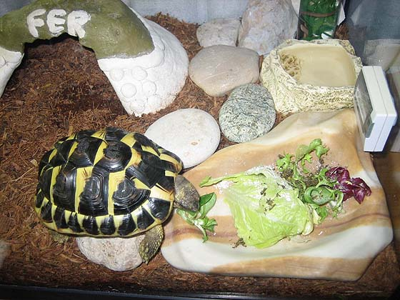
Comiendo a los 45 minutos de salir de la nevera (María-José Navarro).
4.
CONCLUSIONES.
Salvo las pequeñas incidencias que se han comentado, se puede decir
que mi experiencia de hibernación en nevera ha terminado felizmente,
permitiendo que la tortuga hiberne en unos parámetros seguros de
humedad y temperatura, a pesar de las condiciones poco adecuadas para
la hibernación que presenta la vivienda. Durante el proceso
preparatorio previo a la introducción en la nevera, el animal perdió
25 gr y durante las seis semanas de hibernación perdió solamente 2 gr.
más. El estado de salud es perfecto, no apreciándose ningún síntoma en
ojos, narinas, patas y caparazón, lo cual convierte esta experiencia
en un éxito.
[1]
En algunos países, como México, a la nevera o frigorífico se denomina
“refigerador”. Nunca hay que confundirlo con el congelador. La
temperatura óptima de hibernación se estima en 5ºC, que permite la
ralentización del metabolismo sin acercarse demasiado al punto de
congelación.
5. BIBLIOGRAFÍA.
Bradley, K.
Notes on Refrigerator Hibernation for Mediterranean Tortoises with
temperature and weight graphs.
Highfield, A. C. (2002) Practical Encyclopedia of Keeping and
Breeding tortoises and Fresh Water Turtles. Carapace press. London.
England. Segunda edición.
Highfield, A.C.
Refrigerator Hibernation for Tortoises & Turtles.
Safer Hibernation & Your Tortoise Basic guide to hibernation safety.
Our original video showing how to hibernate your tortoise in complete
safety DVD Carapace Press.
Safer Hibernation Supplement Juvenile and American Box Turtle
Hibernation Designed to show how to hibernate young tortoises and
American box turtles safely. DVD. Carapace Press.
Agradecimientos:
Mi más sincero agradecimiento, y el de mi pequeño Fer, a Josep Vicenç,
Marcos y Frank-José, por su insustituible ayuda técnica en el control
de los instrumentos de medida. Y a Aída, Ginés, Fernando, Salva, Klara,
Marcelo y Txema, que han soportado con paciencia mis nervios durante
el proceso y han contribuido con sus sugerencias a resolver mis dudas
para que esta experiencia tuviera éxito.
|